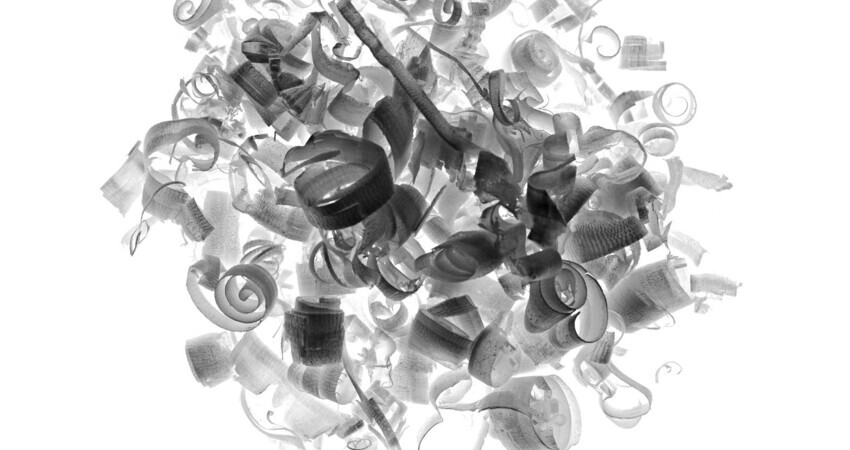
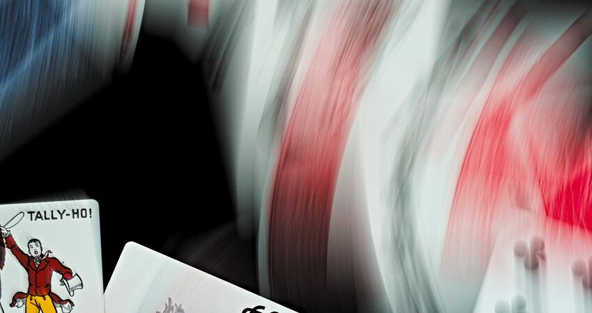

A veces el azar interviene antes de disparar la cámara. Revolvemos agua y aceite para formar burbujas o tiramos montones de viruta en el suelo. A veces obtenemos buenos resultados.
Combinando una exposición prolongada con el movimiento podemos pintar con la luz. Las trayectorias de los objetos son difíciles de controlar así que hay que hacer muchas tomas para obtener la que estamos buscando.
